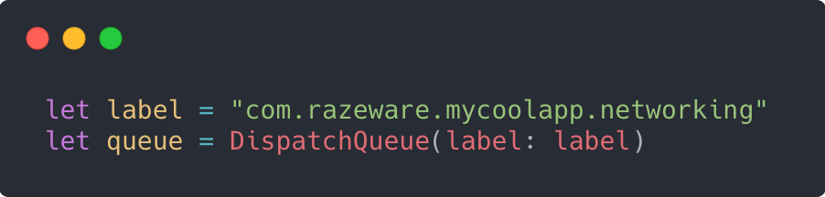

Черги і потоки вже згадувалися декілька разів, і ви, ймовірно, задається питанням, що вони собою представляють на даний момент. У цьому розділі ви отримаєте більш глибоке розуміння того, що таке черги і потоки, і як найкращим чином включити їх в робочий процес розробки.
Потоки
Ваш додаток для iOS - це процес, який виконує кілька завдань з використанням декількох потоків. Кількість завдань, які ви можете одночасно виконувати дорівнює кількості потоків, які в свою чергу залежать від кількості ядер у CPU вашого пристрою.
Є багато причин для розбиття роботи вашого додатка на кілька потоків:
- Швидше виконання: Ви можете виконувати роботу паралельно, якщо розіб’єте її на кілька потоків. Такий підхід сприяє швидшому завершенню роботу, ніж той, де всі завдання запущено послідовно.
- Зворотній зв’язок: Якщо ви виконуєте роботу в основному потоці призначеному для UI, то користувачі помітять, що додаток періодично сповільнюється або зависає через роботу, яка може виконуватися в іншому потоці.
- Оптимізоване споживання ресурсів: Потоки високо оптимізовані ОС.
Звучить чудово, правда? Більше ядер, більше потоків, швидше додаток. Б'юсь об заклад, що ви готові навчитися їх створювати, правда? Але для ще більшої зручності ОС буде виконувати всі створення потоків за вас, використовуючи вищі абстракції.
Apple надає API-інтерфейси, необхідні для управління потоками, але якщо ви спробуєте управляти ними самостійно, ви фактично знизите, а не поліпшите продуктивність. Операційна система відстежує безліч статистичних даних, щоб знати, коли вона повинна і не повинна виділяти або знищувати потоки. Не обманюйте себе, думаючи, що це так просто. З цих причин ця книга не охоплює пряме управління потоками.
Dispatch queues
Для роботи з потоками створюють DispatchQueue. Коли ви створюєте чергу, ОС потенційно може створити і призначити один або кілька потоків в чергу. Якщо існуючі потоки доступні, вони можуть бути використані повторно; якщо немає, то ОС створить їх при необхідності.
Створення dispatch queue досить просте. Приклад створення ви можете бачити в наступному фрагменті коду:
Досить легко, чи не так? Зазвичай текст label поміщається безпосередньо в ініціалізатор, але для стислості коду ініціалізація черги розбита на окремі оператори.
Аргумент label повинен бути будь-яким унікальним значенням для ідентифікації. Хоча ви можете просто використовувати UUID для гарантії унікальності, найкраще використовувати ім'я в стилі зворотного DNS, як показано вище (наприклад, com.company.app).
Main черга
Main черга автоматично створюється, при запуску вашого додатку. Це послідовна черга, яка відповідає за роботу інтерфейсу. Оскільки вона використовується так часто, Apple зробила її доступною як змінну класу, до якої можна звертатися через DispatchQueue.main. Не варто використовувати main чергу для виконання завдань, якщо тільки вони не пов'язані з роботою інтерфейсу, інакше ви заблокуєте UI інтерфейс, який потенційно може знизити продуктивність вашого додатку.
Якщо ви пам'ятаєте з попередньої глави, існує два типи черг: послідовні або паралельні. Ініціалізатор за замовчуванням, який показано в наведеному вище коді, створює послідовну чергу, в якій кожне завдання повинне завершитися, перш ніж почнеться наступна задача.
Щоб створити паралельну чергу, просто додайте атрибут .concurrent, наприклад:
Паралельні черги є настільки поширеними, що Apple запровадила шість різних глобальних паралельних типів черг, залежно від Quality of service (QoS), яку повинна мати черга.
Quality of service
При використанні паралельної черги вам потрібно вказати, наскільки вона важлива, щоб можна було правильно розставити пріоритети в роботі. Пам'ятайте, що робота з більш високим пріоритетом повинна виконуватися швидше, що може потребувати більше системних ресурсів для виконання і вимагає більше енергії, ніж робота з нижчим пріоритетом.
Якщо вам просто потрібна паралельна черга, ви можете використати метод global класу DispatchQueue, щоб отримати одну із передбачених глобальних черг:
Як було сказано вище, Apple пропонує шість класів QoS:
- .userInteractive
.userInteractive QoS рекомендується для завдань, з якими користувач безпосередньо взаємодіє. Оновлення UI інтерфейсу для анімації або чого-небудь ще, що необхідно для забезпечення швидкої реакції інтерфейсу. Завдання, відправлені в цю чергу, повинні виконуватися практично миттєво.
- .userInitiated
Черга .userInitiated повинна використовуватися, коли користувач запускає задачу з UI, яка повинна бути виконана негайно, але може виконуватися асинхронно. Наприклад, вам може знадобитися відкрити документ або прочитати щось із локальної бази даних в момент, коли користувач натиснув кнопку. В таких випадках вам підійде ця черга. Виконання завдань в ній може займати не більше кількох секунд.
- .utility
Ви можете використовувати чергу .utility для задач, які зазвичай включають індикатор прогресу, наприклад, тривалі обчислення, введення-виведення, робота в мережі або безперервні потоки даних. Система намагається збалансувати зворотній зв’язок додатку і продуктивність з енергоефективністю. Завдання можуть займати від декількох секунд до декількох хвилин в цій черзі.
- .background
Чергу .background слід використовувати для завдань, про які користувач безпосередньо не знає. Вона не вимагає взаємодії з користувачем і не чутлива до часу. Попередня вибірка даних, обслуговування бази даних, синхронізація із сервером чи виконання резервного копіювання - все це чудові приклади використання такої черги. ОС буде фокусуватися на енергоефективності, а не на швидкості. Ви можете використовувати цю чергу для роботи, яка може зайняти чимало часу, наприклад кілька хвилин чи більше.
- .default та .unspecified
Існує два інших можливих варіанти, але вам не обов’язково використовувати їх явно. Існує опція .default, яка знаходиться між .userInitiated і .utility і є значенням за замовчуванням аргументу qos. Другий варіант - .unspecified існує для підтримки застарілих API, які можуть виключити потік з QoS. Потрібно знати, що вони існують, але якщо ви використовуєте їх, то ймовірно ви робите щось не так.
Note: Глобальні черги завжди є паралельними і підпорядковуються FIFO.
Надання QoS
Якщо ви створюєте власну паралельну чергу, то ви можете вказати її QoS через ініціалізатор, як показано у прикладі нище:
Якщо ви додасте в чергу завдання з вищою QoS, ніж в черзі, рівень черги збільшиться. В такому випадку всі операції, поставлені в чергу, також матимуть підвищений пріоритет.
Додавання завдань в черги
Dispatch queues надають як синхронні, так і асинхронні методи для додавання завдань в чергу. Пам'ятайте, що під завданням я просто маю на увазі: «Блок коду який вам потрібно запустити». Наприклад, під час запуску програми вам може знадобитися зв'язатися з сервером, щоб оновити стан додатку. Якщо ця потреба не ініціюється користувачем, не повинно відбуватися негайно і залежить від мережевого вводу-виводу, то вам варто відправити його в глобальну чергу утиліт:
Є дві основні речі, які ви повинні взяти з наведеного вище прикладу коду. По-перше, немає нічого особливого в DispatchQueue, що могло б анулювати правила замикань. Вам все ще потрібно переконатися, що ви правильно обробляєте захоплені змінні замикання, такі як self, якщо плануєте їх використовувати.
Сильне захоплення себе (self) в асинхронному замиканні в GCD не викличе цикл утримання, так як все замикання буде вивільнене з пам’яті після його завершення, але це збільшить термін життя self. Наприклад, якщо ви зробите мережевий запит з view controller, а потім його закриєте, то замикання все одно буде виконуватися. Якщо ви захопите view controller слабким посиланням (weak reference), він зможе вивільнитися із пам’яті одразу. Однак, якщо посилання на контроллер буде сильним, view controller залишиться в пам’яті, поки замикання не виконає свою роботу. Тому не варто забувати про weak або strong посилання у замиканнях.
По-друге, зверніть увагу, як оновлення UI відправляються в main чергу всередині фонової черги. Дуже часто виникає потреба вкладати асинхронні виклики всередину інших.
Note: Ви ніколи не повинні виконувати оновлення UI в будь-якій черзі, окрім main черги.
Будьте дуже обережні під час синхронної відправки завдання в чергу. Якщо ви викликаєте метод синхронно а не асинхронно, подумайте двічі, чи дійсно це те, що вам потрібно. Якщо ви не правильно передаєте задачу в чергу, то ваша черга може бути заблокованою, тобто ваш підхід призведе до deadlock. Детальніше про це описано в розділі 5 «Проблеми паралелізму».
Note: Ніколи не викликайте з main потік синхронно, тому що це заблокує ваш потік і навіть може призвести до deadlock.
Приклад завантаження зображень
На даний момент ви ознайомлені із великою кількістю теоретичних концепцій. Час побачити конкретний приклад!
У прикріплених матеріалах до цієї книги ви знайдете початковий проект, який стосується цієї глави. Відкрийте проект Concurrency.xcodeproj та запустіть додаток. Ви побачите, що деякі зображення повільно завантажуються з мережі в UICollectionView. Якщо ви спробуєте прокручувати екран під час завантаження зображень, нічого не відбудеться, або прокрутка буде дуже повільною чи стрибаючою, залежно від швидкості використовуваного пристрою.

Відкрийте CollectionViewController.swift і подивіться, що відбувається. Коли view завантажиться, воно просто використовує статичний список URL-адрес зображень для відображення. Звичайно, в реальному додатку ви, швидше за все, в такому випадку зробите мережевий виклик, щоб згенерувати список відображуваних елементів, але для цього прикладу простіше вручну задати список зображень.
У методі collectionView (_: cellForItemAt :) виникає проблема. Ви можете бачити, що, коли cell готова до відображення, за допомогою одного з конструкторів Data виконується виклик для завантаження зображення, а потім воно присвоюється cell. Код виглядає досить простим, і це те, що більшість початківців зробили б, щоб завантажити зображення, але ви бачили результат: переривчастий, неефективний UI інтерфейс!
Якщо ви переглянули попередні сторінки із поясненнями, то ви вже знаєте, що робота по завантаженню зображеннь1, яка є мережевим викликом, повинна виконуватися в окремому потоці від потоку, на якому обробляється UI.
Mini-challenge: Яка черга, на вашу думку, повинна обробляти завантаження зображеннь? Передивіться кілька сторінок вище і прийміть своє рішення.
Ви вибрали .userInteractive чи .userInitiated? Це заманливо, тому що кінцевий результат видно безпосередньо користувачеві, але реальність така, що якщо ви використовуєте цю логіку, ви ніколи не будете використовувати ніяку іншу чергу. Правильний вибір тут - використовувати чергу .utility. У вас немає контролю над тривалістю мережевих запитів, і ви хочете, щоб ОС правильно підбирала швидкість і час автономної роботи пристрою.
Використання глобальних черг
Створіть новий метод у CollectionViewController, який починається так:
В подальшому ви викличете цей метод у collectionView (_: cellForItemAt :), щоб виконати опрацювання зображення. Почніть з визначення URL зображення, яке має завантажитись. Оскільки список URL-адрес є частиною self, вам необхідно дотримуватися класичних правил захоплення замикань. Додайте наступний код всередині асинхронного замикання(async closure):
Коли ви знаєте URL-адресу для завантаження, ви можете використовувати той же ініціалізатор даних, який ви використовували раніше. Незважаючи на те, що виконується синхронна операція, вона виконується в окремому потоці і, отже, на UI не впливає. Додайте наступний код в кінець замикання:
Тепер, коли ви успішно завантажили вміст URL і перетворили його в UIImage, прийшов час передати його cell. Пам'ятайте, що оновлення UI інтерфейсу можуть відбуватися тільки в main потоці! Додайте цей асинхронний виклик в кінець замикання:
Зверніть увагу що у main потоці обробляється мінімум коду. Для того щоб не перевантажувати main потік, потрібно все, що не стосується UI, обробляти в іншому потоці. У вас не виникають питання стосовно cell? Чому б просто не передати конкретну PhotoCell в цей метод замість IndexPath?
Подумайте про природу того, що ви тут робите. Ви перенесли налаштування cell до асинхронного процесу. Під час завантаження даних з мережі користувач, швидше за все, щось робить з вашим додатком. У випадку із UITableView або UICollectionView ймовірно, виконує деяку прокрутку. До моменту завершення мережевого запиту cell може бути повторно використана для іншого зображення або повністю вилучена. Викликаючи cellForItem (at :), ви отримуєте cell в той час, коли готові її оновити. Якщо cell все ще існує і все ще знаходиться на екрані, то ви оновите дисплей, інакше ви отримаєте nil.
Якби ви просто передали PhotoCell і безпосередньо працювали з цим об'єктом, то ви виявили б, що випадкові зображення поміщаються у випадкові cell, і що одне і те ж зображенняи кілька разів повторюватиметься при прокручуванні.
Тепер, коли у вас є відповідний метод завантаження зображення і метод настройки cell, оновіть collectionView (_: cellForItemAt :), щоб викликати його. Замініть всі проміжні створення і повернення cell цими двома рядками коду:

Використання вбудованих методів
Ви можете побачити, наскільки простими були вищевказані зміни, які значно підвищили продуктивність вашого додатку. Тим не менш, не завжди необхідно створювати чергу самостійно. Багато із стандартних бібліотек iOS використовують їх за замовчуванням. Додайте наступний метод в CollectionViewController:

Зверніть увагу, що на цей раз замість створення черги ви просто використовували метод dataTask в URLSession. Код майже такий самий, але він обробляє завантаження даних і при цьому вам не потрібно ініціювати нову чергу. Завжди віддавайте перевагу використовувати надані системою методи, коли вони доступні, так як це зробить ваш код не тільки більш орієнтованим на майбутнє, але і більш легким для читання іншими розробниками. Молодший програміст може не знати, що таке черги, але він розуміє, що потрібно виконувати мережевий виклик.
Якщо ви викликаєте downloadWithUrlSession(at :) замість downloadWithGlobalQueue(at :) в collectionView(_: cellForItemAt :), ви повинні побачити такий самий результат після повторного запуску додатку.
Який наступний крок?
На цьому етапі ви повинні добре розуміти, що таке черги, для чого вони використовуються і як їх використовувати. Експериментуйте з прикладами коду зверху, щоб зрозуміти, як вони працюють.
Подумайте про те, щоб передати PhotoCell в методи завантаження, а не просто передати IndexPath, щоб побачити на практиці поширений тип помилок.
Приклад додатку, звичайно, дещо видуманий, щоб легко продемонструвати, як працює DispatchQueue. Є багато інших способів підвищення продуктивності, які можна застосувати у цьому додатку, але доведеться почекати Главу 7 «Черги операцій».
Тепер, коли ви побачили переваги, наступна глава познайомить вас з небезпеками реалізації паралелізму в вашому додатку.